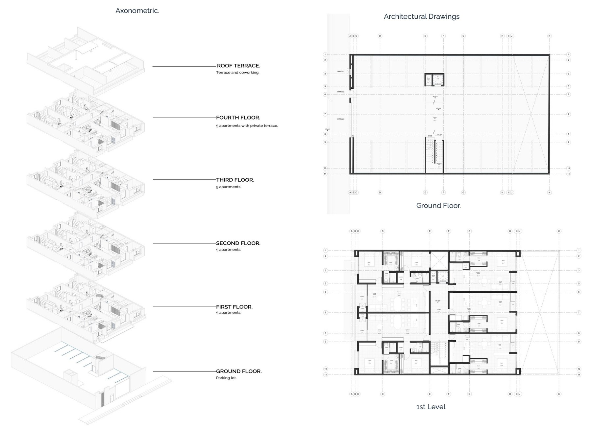
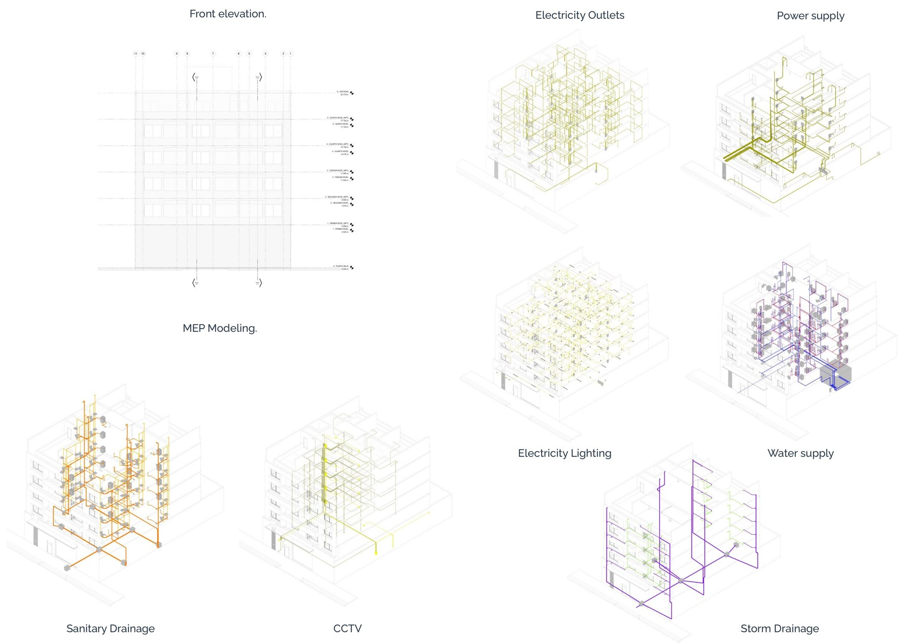

01 / 05 — Residential
Verde
León, Guanajuato Finish

A—1.0
Description
Verde is a residential building designed with a strong focus on sustainability and simplicity. Its clean architectural lines are complemented by abundant vegetation integrated into the balconies, creating a natural and harmonious atmosphere.
Large openings maximize natural light and ventilation, reducing energy consumption while enhancing the comfort of the living spaces. Verde offers a serene and visually calm experience, blending nature with urban living.
Axonometric & Architectural Drawings
A—1.1
MEP Coordination — Electrical, Water, Sanitary & Storm Drainage
M—1.0